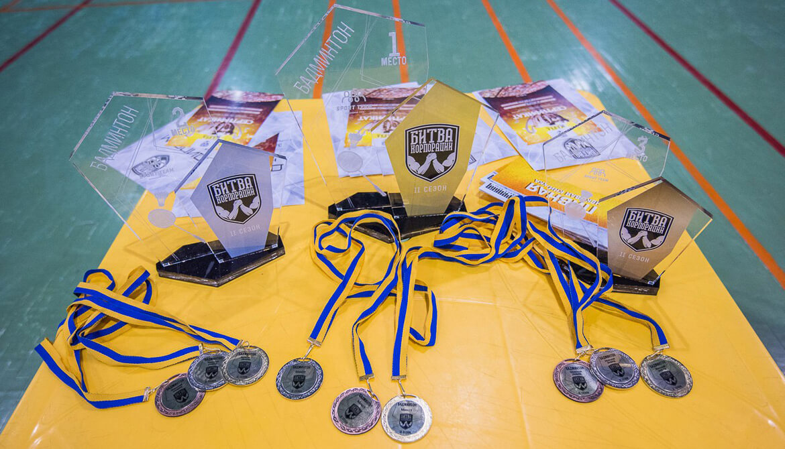

Бадминтон - "Битва корпораций" II сезон
11 февраля 2017 года в субботу прошёл первый этап весеннего кубка и шестой этап в году второго сезона "Битвы корпораций".
Спустя пять дней после сенсационного выступления спортсменов КП «ХТС» на первом этапе (из пяти) весеннего кубка «Битвы корпораций II», я, Ваш покорный слуга, дождавшись, наконец, полного оглашения организаторами позиций и результатов, начинаю писать статью. В этот раз авторских фото не будет. Для фотографического оформления статьи использованы материалы «Битвы корпораций».
Профком КП «ХТС» провёл отбор для всех желающих. Соответствующая афиша была вывешена на доски объявлений. По результатам отбора, были определены четверо лучших парней и девушек, которым профком оплачивал тренировки, непосредственно перед соревнованиями. Большая благодарность следующим людям, участвовавшим в отборочном первенстве КП «ХТС»: Артёму Воронову, Константину Галкину, Виталию Кальницкому, Ольге Иваненко и Татьяне Лещинской!
В соревнованиях по бадминтону кубка «Битвы корпораций II» было 6 групп по 3 команды. Из группы выходила одна лучшая команда плюс 2 лучшие вторые команды. Далее четвертьфинал. Все участники от КП «ХТС» попали в группу A своих разрядов и получили в соперники «Галерею мобильной связи» и «Владар».
В женском одиночном разряде, как первая ракетка отбора, КП «ХТС» представляла Наталия Гармаш. Дважды без проблем обыграв представительницу «Галереи мобильной связи» со счётом 7-0, Наталии осталось подтвердить свой успех во втором матче. Наталия обыграла спортсменку из «Владар» с результатом 7-1 и 7-2 и стала участницей четвертьфинала, пропустив лишь 3 воланчика в ответ. Прекрасная концентрация! Четвертьфинал предусматривал игры до 11 очков. Здесь по жеребьёвке в соперницы Наташе была определена представительница Альфа-Омега, которая была обыграна 11-2 и 11-4. В полуфинальном противостоянии Наташа обыграла Карину Фам из «Freshline» 11-4 и 11-2. В финале Наталию ждала встреча с фавориткой женского турнира из «Водоканала» - Натальей Ходак. Наша Наталия собрала всю волю в кулак и принесла золото женского личного зачёта, обыграв соперницу 11-6 и 11-4. Наталия Гармаш на всех этапах, предшествовавших победе, одержала более уверенные победы, нежели её конкурентки в параллельных матчах.
В мужском одиночном разряде выступал победитель внутреннего отбора Анатолий Сидь. Матчи группового этапа были напряженными. Первым был побеждён представитель «Галереи мобильной связи» 7-5 и 7-2, а далее Анатолий первенствовал во встрече с «Владар» 7-5 и 7-3. Далее была жеребьёвка. В четвертьфинале Анатолию противостоял Дмитрий Козлов из команды «Freshline», которая является нашим непосредственным конкурентом в общем зачёте. Анатолий хорошо провёл первую партию, победив в ней 11-3. Далее, наверное, сказалась усталость от напряженной подготовки и была проиграна вторая партия со счётом 9-11. Таким образом, счёт в матче сравнялся. В третьей партии соперник снова оказался сильнее - 7-11. Анатолий занял пятое место, показав лучший результат из мужчин, выбывших в четвертьфинале, а его соперник, впоследствии, занял 3-е место в мужском одиночном разряде. Победителем турнира стал Руслан Михайленко из «Водоканала».
В парном смешанном разряде выступили вторые ракетки «ХТС» Олег Яритенко и Татьяна Альшаева. В первом матче с большим скрипом была обыграна пара из «Галереи мобильной связи» (7-6, 7-4). Во втором матче более уверенно была обыграна пара из «Владар» (7-4, 7-1). Далее, слепой жребий определил нам в соперники представителей КБ им. Морозова, над которыми мы доминировали и обыграли (11-2, 11-4).
Полуфинальная битва с «Теллур» была выиграна со счётом (11-7, 11-6). В финальной партии Татьяне и Олегу предстояло противостоять Глафире Малеевой и Владимиру Коломацкому из «Водоканала». По иронии судьбы, на разминке Татьяна получила травму ноги и, после оказания медицинской помощи, вышла играть в финале. К сожалению, расклады были не нашей стороне – 3-11 и 2-11, но, к счастью, это уже было второе место и это факт!
Команда КП «ХТС» заслуженно получила кубок за второе место в общем зачёте по бадминтону:
- Наталия Гармаш – золото в женском одиночном разряде;
- Анатолий Сидь – пятое место в мужском одиночном разряде;
- Олег Яритенко и Татьяна Альшаева – серебро в миксте.
Победители общего зачёта этапа бадминтон КП «Водоканал» первенствовали в мужском одиночном и миксте, а также получили серебро в женском одиночном.
В данный момент, из итогового зачёта «Битвы корпораций II» изъяты результаты Artjoker и JustCoded, перешедших по ходу турнира в «IT-Битву корпораций».
Первая пятёрка весеннего кубка «Битвы корпораций II», после первого этапа, выглядит таким образом:
- Водоканал
- ХТС
- Freshline
- Укрспецкомплект
- NovoAbrasive
Сложив все очки команд, с заработанными в осеннем кубке, можно определить первую пятёрку общего годового зачёта:
- Водоканал – 19
- Zotti - 28
- Adidas – 33
- ХТС – 37
- Freshline – 41
Благодаря шикарному выступлению бадминтонистов, сокращено отставание в общем зачёте от команд «Zotti» на 7 пунктов и «Adidas» на 4 пункта. Борьба за призовые места в весеннем и годовом зачёте в самом разгаре!
Стоит отметить, что один из двух дебютантов «Битвы корпораций II» - команда «Альфа-Омега», начавший с весеннего кубка, занял 8-е место.